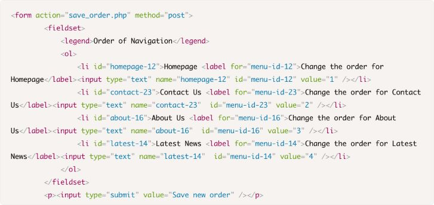
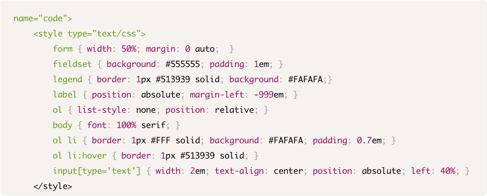
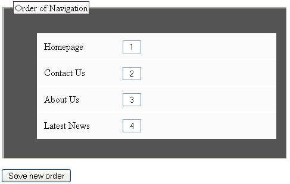
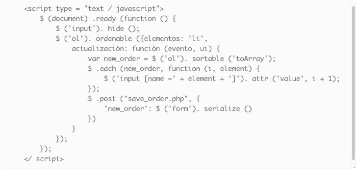
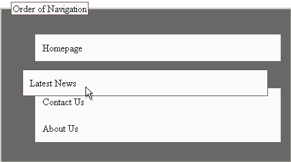
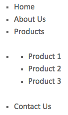
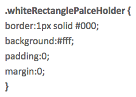
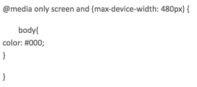
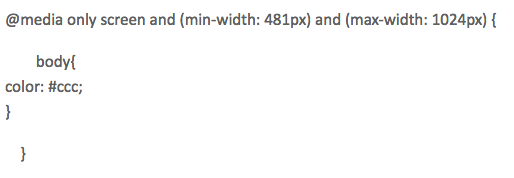

Conceptos
Graceful Degradation
Progressive Enhancement
Graceful Degradation vs Progressive Enhancement
¿Cuál de los dos usar?
Graceful degradation y progressive enhancement son una técnica útil que permite a los desarrolladores web centrarse en el desarrollo de los mejores sitios web posibles, al tiempo que equilibra los problemas en los sitios web a los que acceden múltiples agentes de usuarios desconocidos. Graceful degradation / Progressive enhancement está relacionada, pero es diferente, a menudo se considera que va en la dirección opuesta a la progressive enhancement. En realidad, ambos enfoques son válidos y con frecuencia se complementan entre sí. Acontinuación haremos una pequeña comparación entre Graceful Degradation y Progressive Enhancement, y las ventajas y desventajas de cada uno.
Graceful Degradation cuenta con varias ventajas, por ejemplo:
- Brinda una caja de herramientas clara.
- Utiliza clases de visibilidad. Organizar las características y los elementos en "debe tener" y "agradable de tener".
- Separa los sitios móviles. Redirigir a los usuarios móviles a un segundo sitio. Mantener dos sitios puede duplicar el trabajo, pero resuelve el problema inmediato.
- Caída a 640px de ancho. La mayoría de los dispositivos de mano pueden mostrar razonablemente bien sitios web de 640 píxeles de ancho.
- Permitir el acceso al contenido básico del sitio mientras se garantiza una experiencia de usuario óptima en dispositivos menos capaces.
- Asegura que todos los usuarios puedan ver su sitio web, independientemente del navegador que usen, cuantos más dispositivos y tamaños de pantalla su sitio web funcione, mayor será el alcance que tendrá el usuario.
Por otro lado, también presenta algunas desventajas a la hora de utilizarlo, como por ejemplo:
- Limita nuestros diseños a una sola audiencia,sin importar cuán extendidos estén, sigue siendo limitante.
- Los sitios atienden a navegadores antiguos en donde su diseño puede pasar de ser aceptable a ridículo.
- Las personas tienen que estar actualizando sus navegadores.
Por su parte, Progresive Enhancemen presenta las siguientes ventajas:
- Accesibilidad: el contenido está al alcance de todos los visitantes.
- Portabilidad: Soporte entre navegadores y dispositivos cruzados.
- Modularidad: Tener componentes desacoplados con límites inteligentes hace que las construcciones de sitios sean más fáciles y más tolerantes a fallas.
- Rendimiento del sitio: las mejoras en términos de tiempos de carga de páginas (percibidas que afectan la usabilidad) se implementan más fácilmente.
- Puede adivinar con una línea de código en cuál de los navegadores se está abriendo el sitio.
- Comienza con un nivel básico de características que funcionan en todos los navegadores.
- Es bueno para el usuario.
- Es bueno para el desarrollador.
- Su código es más fácil de mantener y depurar.
La cuestión de cuándo usar Graceful Degradation o Progressive Enhancement depende en gran medida de la funcionalidad que ofrece el sitio web. En general, Progressive Enhancement brinda una experiencia de usuario básica a todos los navegadores y, a medida que avanza la versión, también lo hace la experiencia. Por otro lado, Graceful Degradation es el proceso de creación de sitios web para tecnologías posteriores al tiempo que permite a navegadores antiguos mostrar algunas funciones básicas. En este sentido, si su sitio web tiene contenido estático sin gráficos ni videos, entonces Graceful Degradation funcionará porque no hay mucha diferencia entre las tecnologías. Lo contrario es cierto para los sitios web de uso intensivo de la aplicación. Si sus páginas web tienen mucha funcionalidad con la transmisión de videos, imágenes, chat en vivo, etc. entonces es importante que utilice la mejora progresiva porque todos los usuarios tendrán una experiencia de visualización básica independientemente de sus navegadores. Aunque es posible que no puedan acceder al chat y a otras funciones avanzadas, aún pueden solucionarlo y, en tal caso, esta es su mejor opción.
Buenas Prácticas
Implementar PE de forma ordenada con capas
La primera capa es HTML semántico limpio. Esto permite que los agentes de usuario basados en texto, hablados, anticuados y robóticos naveguen por el contenido de su sitio web de manera adecuada.

La segunda capa es CSS. Esto permite a los usuarios-agentes basados en la visualización mostrar o alterar la representación visual del contenido de su sitio web.
 La tercera capa es JavaScript. Esto permite a los usuarios-agentes que son capaces de usarlo proporcionar a sus usuarios una usabilidad mejorada.
 Ejemplos
Graceful Degradation
Ejemplo 1
La etiqueta "noscript" es un mejor ejemplo de degradación elegante si ha proporcionado funciones de JavaScript en su sitio web y su navegador no admite JavaScript, o JavaScript está deshabilitado en el lado del cliente. Aparecerá el mensaje dentro de la etiqueta "noscript".
Por ejemplo, tiene una función JavaScript en un archivo JS que está incluido en la página desde el exterior, ha escrito código para menús desplegables, pero en el caso de que JavaScript no admita el navegador o esté deshabilitado, el código dentro del "noscript" "La etiqueta se representará y alcanzará la funcionalidad básica.

En el ejemplo anterior, tiene submenús dentro del enlace de productos y estos aparecen o se deslizan hacia abajo sobre la base de la función de JavaScript cuando pasa el mouse o hace clic en el enlace del menú principal de los productos. La función de JavaScript está escrita en un archivo JS externo denominado "top-navigation.js". Si el navegador no es compatible con JavaScript o JavaScript está deshabilitado, el código dentro de la etiqueta "noscript" se verá como se muestra a continuación.
Proressive Enhancement
Ejemplo 1
Las nuevas propiedades de CSS3 son un buen ejemplo de mejora progresiva. Supongamos que tiene un área rectangular con un poco de color de borde y codifica el CSS de acuerdo con el navegador base (IE7 o IE8).
Ha escrito la clase CSS anterior para el navegador IE7, que es su navegador base. Se representa en los navegadores IE7 + como un rectángulo y se agrega un atributo más (gris resaltado) dentro de esta clase, como en el ejemplo a continuación. El resultado en los navegadores IE7 e IE8 será el mismo que en un rectángulo. Pero, en el navegador IE9, el resultado aparece como un cuadro rectangular con esquinas redondeadas.

Ejemplo 2
El mejor ejemplo de mejora progresiva es el diseño receptivo, donde establece el HTML según los dispositivos y su navegador, que utiliza la consulta de medios. La técnica de diseño receptivo se basa en la estructura semántica de HTML, consulta de medios de CSS y dispositivos visibles. El código está escrito de una manera compatible tanto con los navegadores web como con los dispositivos móviles. Aquí, el diseño del sitio web se representa en función del ancho de la pantalla. En una consulta de medios de CSS, otorga las condiciones para ajustar el diseño o los elementos cosméticos en la página web.
El código o las clases de CSS anteriores se aplicarán solo a aquellos dispositivos o navegadores que tengan un ancho máximo de pantalla de 480 px, y el siguiente CSS solo funcionará para aquellos que tengan un ancho mínimo de 481 px y un máximo de 1024 px.
Está definiendo las condiciones para que sus navegadores o dispositivos puedan responder al mismo elemento con diferentes comportamientos.